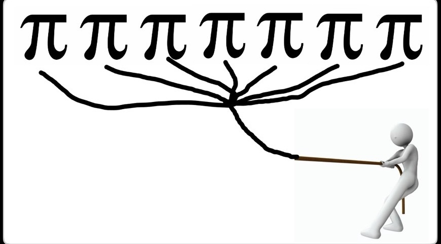
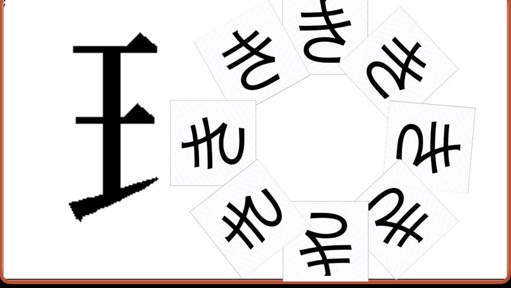

牛にお酢をかけると、すると大きな声をあげながら何かに変身しました。牛は何になった？
正解：相撲
解説：
牛の鳴き声である「モー」と、
頭からお酢をかけるという状況から「酢＋モー」→「相撲」を連想できますよね。
大人が足してるのに 割った というものは何？
正解：酒
解説：
”水割り”とか”ロック”をか聞きますよね。
水やソーダなどを加えても、お酒そのものが物理的に割れているわけではありません。
この画像が示しているものとは？

正解：パイナップル
解説：
π＋7（個）＋pull（引っ張る）からパイナップルとなります。
パインアップルでも可としています。
'けん'は'けん'でも、緑が多くて走り回る'けん'は？
正解：柴犬
解説：
「緑が多い」を「芝」と考え、
「芝＋犬」で「柴犬」とするものです。
この画像が示すものは何？

正解：臨機応変
解説：
”き”が輪になって並んでいることから’輪’、そして’き’。また、左は王へんがあるのでそれらを組み合わせて
臨機応変（りん＋き＋おうへん）となります。
かなりの難問なので解けたら素晴らしいですよ。
ホワイトボードの俳句に関する質問です。
アンケートフォームを開く